ART 103

Signs
Signs Digitally Rendered Using Fusion 360
For this project, I designed location-specific signs. These signs had been designed in Photoshop and Illustrator and then 3D rendered on Fusion.Phase 1 - Location Scouting
- Newpark Mall - Newark,CA
- Pyramid - Union City, CA
- Birch Grove Park - Newark, CA
- Yoshihiro Uchiada Hall - San Jose, CA
Stamps Digitally Rendered Using Fusion 360
Phase 2 - CAD Modeing Stamps
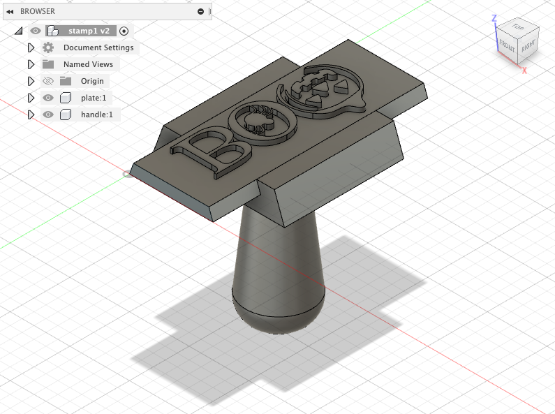 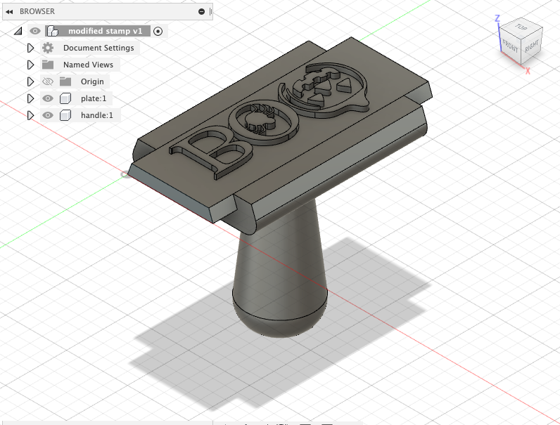Phase 3 - CAM Modeling Toolpaths
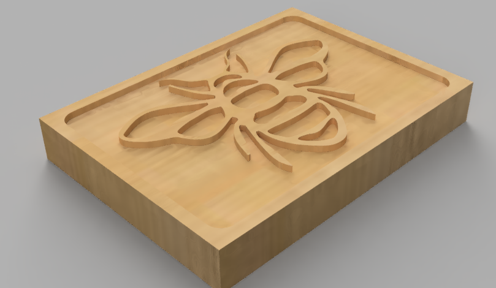 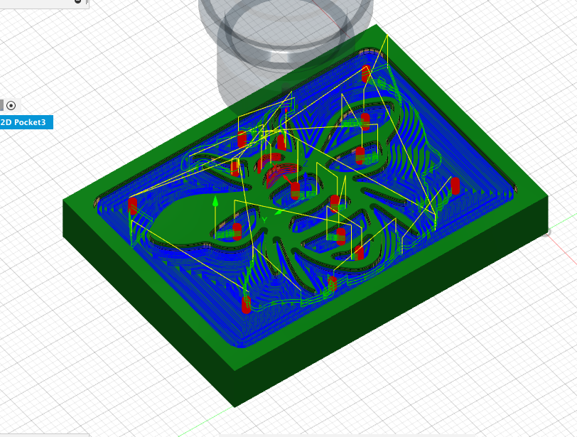 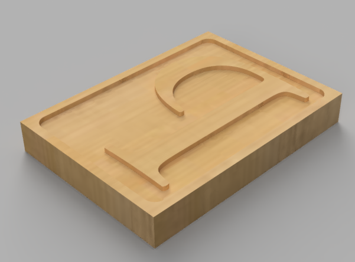 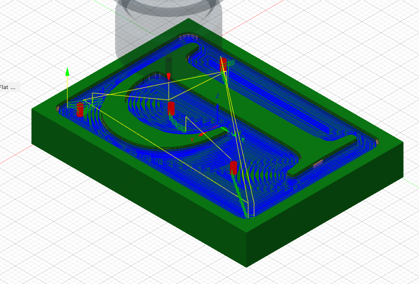Phase 4 - Simulated Sign Ideas
Gravestone sign commemorating Newpark Mall. I grew up around this mall and over the years, I have watched the downfall one of my favorite hangout spots.

This sign calls attention to people around the YUH balcony. I wanted to let people know that they need to be respetful of the bees working around the planter boxes.

This sign is to go on the fence of the Union City Pyramid. This large scale playrgound is a space where adults can play and channel their inner child.

Sign for my local park. This area became a sancuary for stray cats and I want people to keep a distance away from these cats.

I added another sign that would be located in an SJSU ladies room. I made this sign after noticing that the feminine hygine product dispensers are always empty or broken. I wanted to criticize the school for their inability to keep basic necessities stocked up for their menstruating students.
Phase 5 - Simulated Signs in Fusion
Map of my Final Locations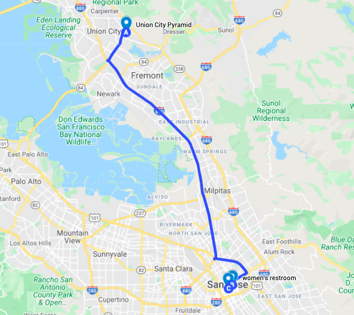
"Adults at Play" at The Pyramid --> Link
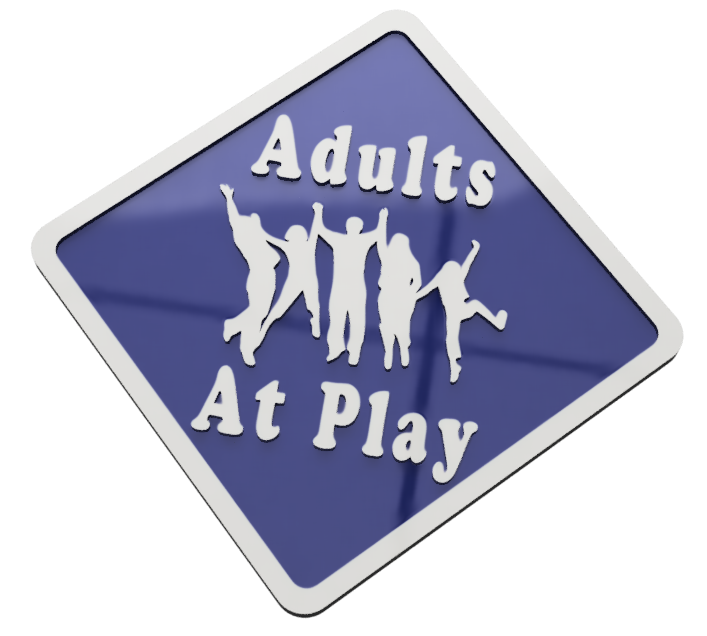 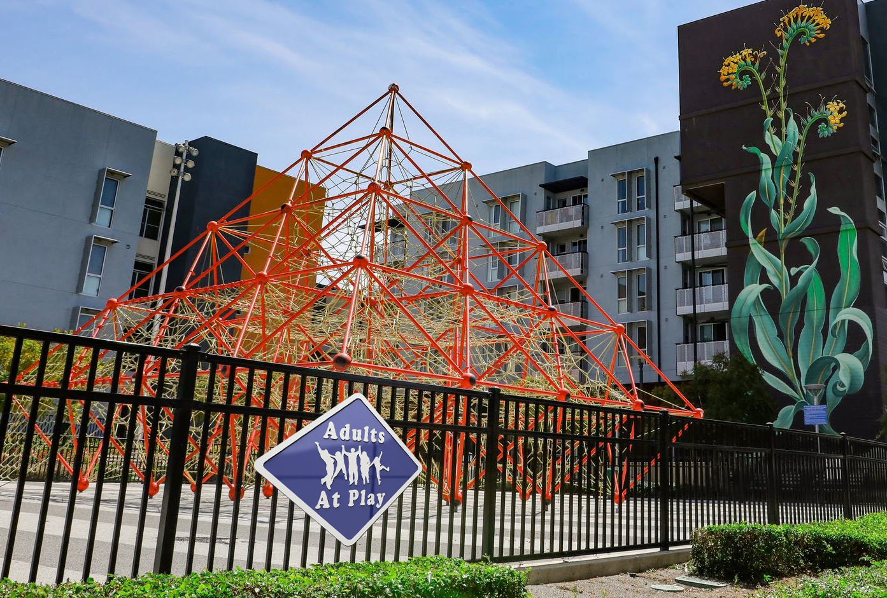"Bees at Work" at Hammer Theater --> Link
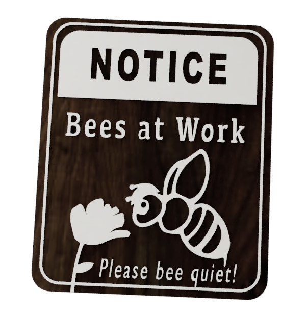 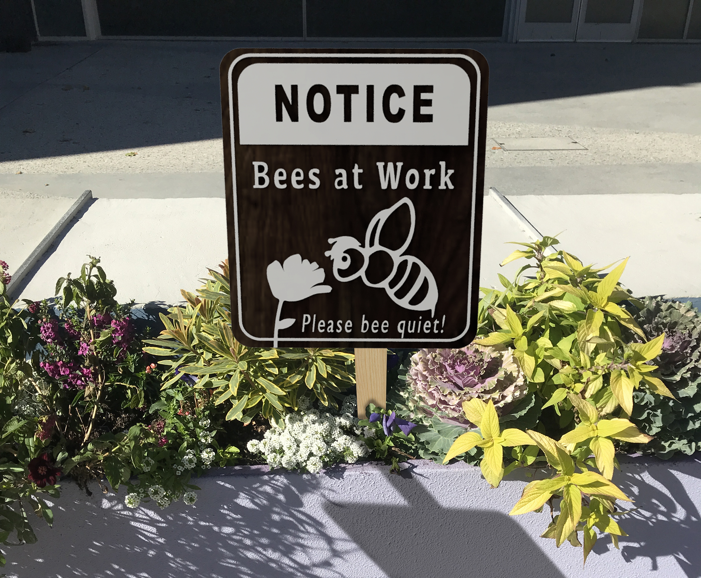"Free Products" in SJSU Art Building Bathrom --> Link
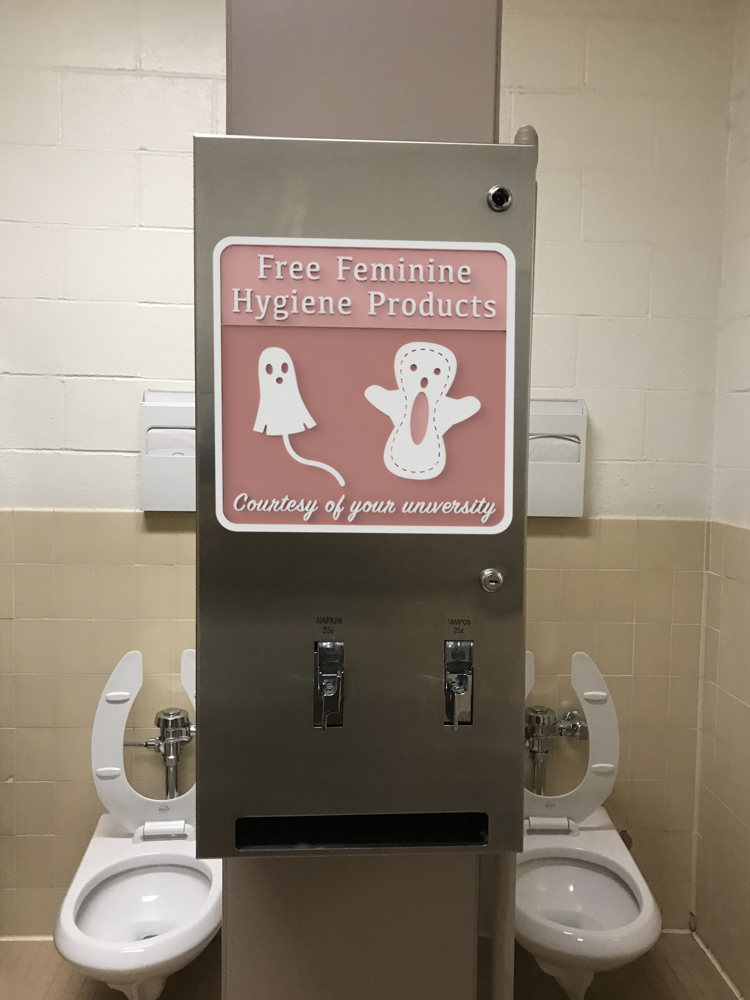Phase 7 - Video
My video simulates the feeling of traveling from each location. It gives some context information for each spot.